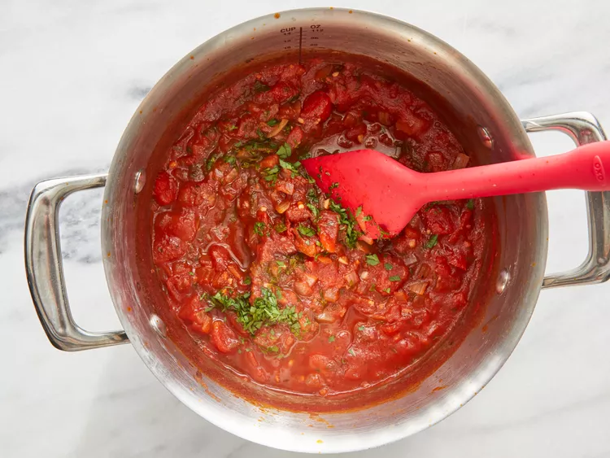

Arrabiata sauce

Description
A traditional Italian pasta with garlic, zest and spice. Arrabiata translates to angry
in english and appropriately describes this tangy cornestone of any pasta dish.
Ingredients
- 1 teaspoon olive oil
- 1 cup chopped onion
- 4 cloves garlic, minced
- 2 14.5 ounce cans peeled and diced tomatoes
- ⅜ cup red wine
- 2 tablespoons tomato paste
- 1 tablespoon white sugar
- 1 tablespoon chopped fresh basil
- 1 tablespoon lemon juice
- 1 teaspoon crushed red pepper flakes
- ½ teaspoon Italian seasoning
- ¼ teaspoon ground black pepper
- 2 tablespoons chopped fresh parsley
Steps
- Heat oil in skillet over medium heat
- Add onion and garlic
- Cook and stir until softened (5 minutes)
- Stir in diced tomatoes, wine, tomato paste, sugar, basil, lemon juice, red pepper, flakes, italian seasoning and black pepper
- Reduce heat to medium and simmer, uncovered for 15 minutes
- Stir in parseley, ladle over hot cooked pasta of choice